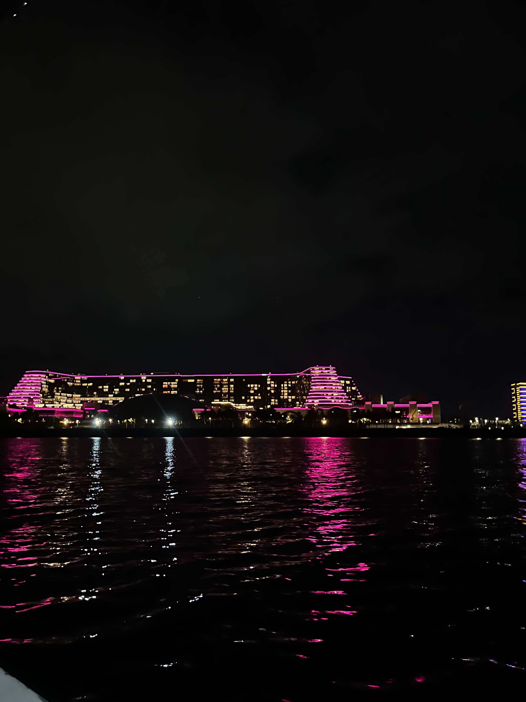
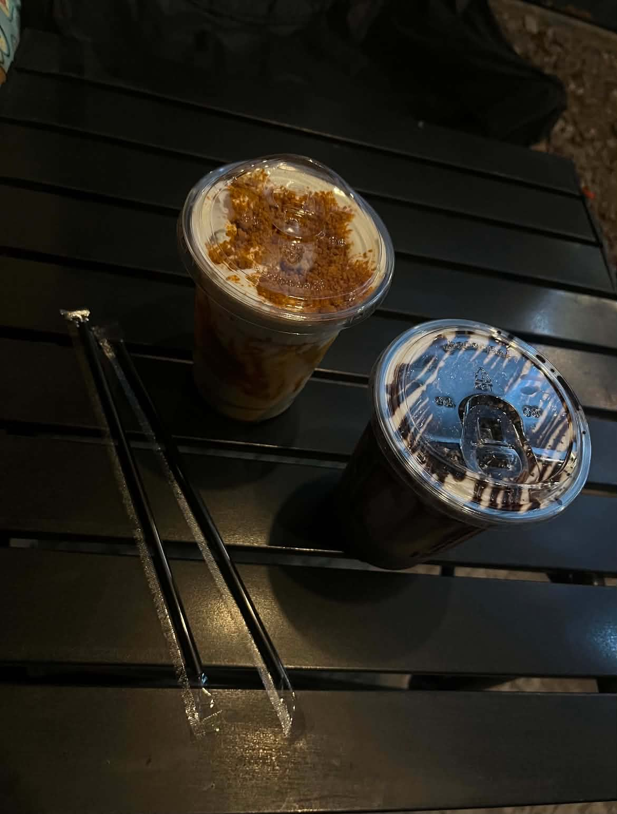

A little introduction
Chelsea Glaizel

life goes on ✦
Welcome to ELSEWHERE.
I'm a girl who loves discovering beautiful places,
cozy spots, good food, and exciting destinations.
ELSEWHERE is my little collection of places worth
exploring — from quiet corners and cozy cafés to
destinations that make an ordinary day feel a little
more special.
Think of this as your little guide to wandering,
getting lost, taking pictures, and making memories
along the way.
— Chelsea
my little list
Places to go.
Cruise by the Bay
📍 SM by the Bay Amusement Park,
Mall of Asia Bay Area, Pasay
MOA Cruise by the Bay is a must-try for visitors
looking to enjoy Manila Bay from a different
perspective. Hop on a relaxing 15–30 minute boat
ride for only ₱200 and take in beautiful coastal
views, especially during sunset.

Read more ♡
8 Balli'n Cafe
📍 2231 Revillin, Santa Ana,
Manila, Metro Manila
8 Balli’n Cafe is a cozy and budget-friendly spot
in the neighborhood. Grab a refreshing drink,
challenge your friends to a game of 8-ball pool,
and enjoy a laid-back hangout.

Read more ♡
Makati Circuit
📍 Ayala Malls Circuit,
Hippodromo St, Makati City
Circuit Makati is a vibrant destination where you
can shop, dine, explore, and enjoy exciting
entertainment in one place. It's a great spot
to spend the day with friends or family.
 Read more ♡
Read more ♡